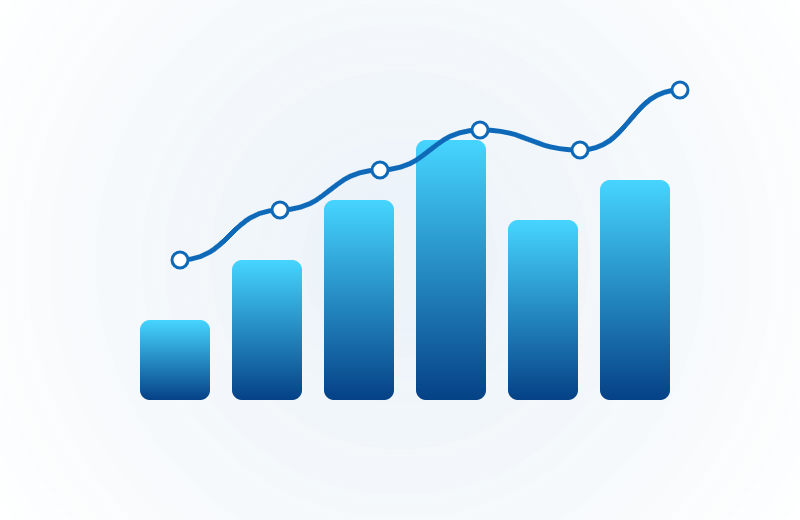
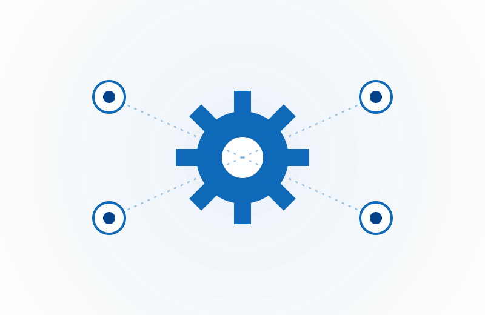
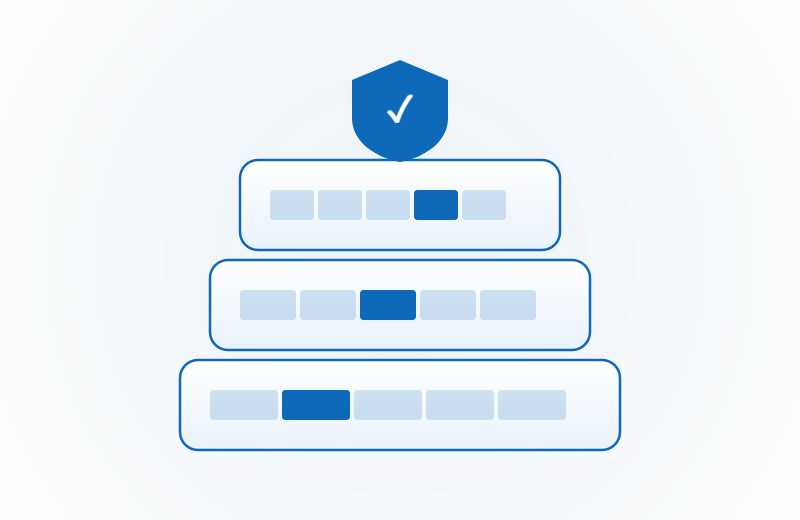

End-to-End Process Mapping →
Map how work actually flows — every handoff, decision and waiting period — before any technology is chosen.
Gap Analysis & Root Cause →
DMAIC root-cause analysis that pinpoints where processes lose time, money or quality, and quantifies the cost of waste.
Future-State Design →
The optimised to-be process — documented, peer-reviewed and signed off — becomes the blueprint for everything built next.
Process Benchmarking →
Cycle times, error rates and cost-per-transaction benchmarked against industry standards and peer organisations.
Lean Six Sigma Delivery →
Full DMAIC project delivery — waste elimination, statistical analysis and control plans that sustain the gains.
Governance & Standards →
Documentation frameworks, ownership models and review cadences aligned to ISO 9001 that keep processes current.

Microsoft Fabric & OneLake Architecture →
Migrate to Microsoft Fabric with a governed medallion architecture — and the capacity model to keep it affordable.
Power BI Performance & Optimisation →
DAX optimisation, semantic-model consolidation, capacity right-sizing and deployment pipelines that make Power BI feel instant again.
Real-Time Intelligence →
Eventstream ingestion, KQL databases and Data Activator for live operational analytics and automated alerts.
Data Engineering & Pipelines →
ADF pipeline design, PySpark notebooks, streaming Delta loads and data-quality frameworks that hold under load.
Risk & Compliance Analytics →
Regulatory dashboards (AML/CTF, APRA CPS 234, RG271), SLA tracking and audit-trail automation.
Fraud & Anomaly Detection →
Real-time transaction scoring, entity profiling and a broad fraud-pattern library surfaced on risk dashboards.

Power Automate & Workflow Automation →
End-to-end workflow automation on the redesigned blueprint — with API integration and Power Apps front-ends.
Copilot Studio & Multi-Agent Orchestration →
Enterprise Copilot Studio agents with custom connectors, multi-agent workflows and Agent 365 governance.
RAG & Azure OpenAI →
Retrieval-augmented generation over your enterprise data — with Azure AI Search and semantic chunking that actually works.
ML Model Development →
Forecasting, classification and anomaly detection built in Fabric notebooks and deployed to Azure ML.
AI Readiness & Governance →
Readiness assessments across data quality, security posture and governance gaps — before any AI deployment.
Night Factory™ Managed Service →
An always-on agent layer running overnight — monitoring, reconciling and reporting before the team starts the day.

Azure Architecture →
Landing zones, networking and cost-managed Azure foundations sized to your workloads.
Microsoft 365 & SharePoint →
Collaboration, content and process-app surfaces integrated with the data platform.
Data Factory & Integration →
Orchestrated ingestion and integration across your line-of-business systems.
Governance & Security →
Purview cataloguing, lineage, RBAC and policy so the platform stays trustworthy as it grows.